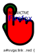

Red is the default - cyan is the complex rule.
IMG

OBJECT
inline
INTERACTIVE
Firefox
a#svga:link .red {..}
a#svgb[data-years|="pickme"] .red {..}
a#svgc[href$="#0"] .red
a#svgd:link path[class^="re"]
@media only screen and (orientation: landscape) { #svge .red {
@media only screen and (orientation: landscape) { #svge .red {